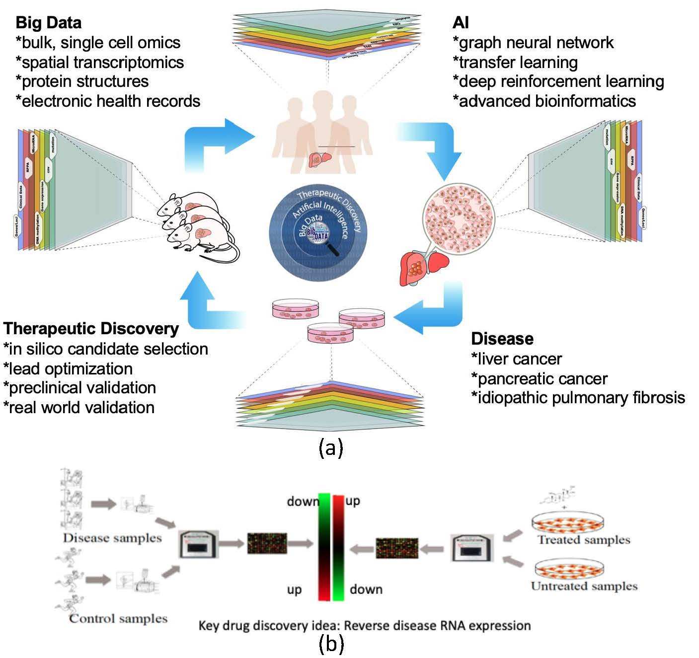
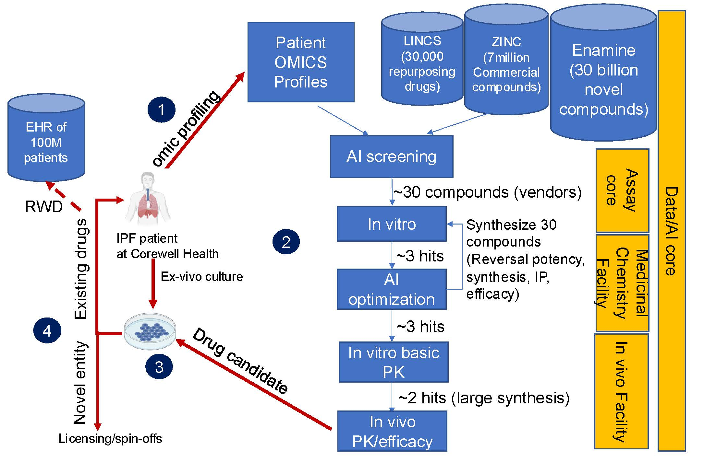

Core Team

Dmitry Leshchiner, MD
Lead · AI Drug Discovery
Postdoctoral scholar, Chen Lab
Democratizing AI-based drug discovery in academia
The mission of AID in the College of Human Medicine at Michigan State University (MSU) is to bring together AI, big data, and the local drug discovery community; to train the next generation of scientists with specialized expertise; and ultimately to grow into a sustainable research and education program.
To achieve research excellence, AID leverages emerging big data (e.g., single-cell and spatial transcriptomics, electronic health records), state-of-the-art AI methods (e.g., graph neural networks, transfer learning, deep reinforcement learning), and advanced preclinical models (e.g., ex vivo tissue slice cultures, organoids). AID takes a novel, patient-centric approach: drugs are proposed based on RNA features derived from patients and then validated in models derived from patient tissues.
AID supports both the repurposing of existing drugs for new indications, which can speed up discovery and approval, and the discovery of novel compounds, which takes longer but offers new therapeutic approaches and intellectual property. A key strength of AID is its unique transcriptomics-based drug discovery platform, developed by our team members.


Idiopathic pulmonary fibrosis (IPF) is shown as an example.
| Indication | Lead investigators | Status | Goal | Funding |
|---|---|---|---|---|
| HCC | Samuel So, Mei-Sze Chua (Stanford) | Graduated | Novel | NIH R01 GM134307; NIH R01 GM145700 (scored 7%) |
| DIPG | Rintaro Hashizume (UAB) | PK / In vivo | Novel | NIH R01 GM145700 |
| IPF | Xiaopeng Li (MSU), Reda Girgis (Corewell) | Lead optimization | Repurposing / Novel | SPG; NIH R61 HL177451 |
| Prostate cancer bone metastasis | Xiaohong Li (University of Toledo) | In vivo | Novel | DoD HT94252410133; NIH R01 CA286189 (scored 5%) |
| Mesenchymal stem cell dedifferentiation | Ling Huang (HFH) | In vitro | Repurposing | SPG |
| Endometriosis | Asgi Fazleabas (MSU) | In vitro | Repurposing | NIH R01 pending (scored 4%) |
| AML | Sachi Horibata (MSU) | In vitro | Repurposing | Foundation; startup funds |
| Alzheimer's disease | Dave Morgan (MSU) | In silico | Repurposing | NIH R01 submitted |
| Pediatric MODS | Surender Rajasekaran (Corewell) | Signature discovery | Repurposing | NIH R01 GM134307; NIH K99 HD111575 |
| Cardiogenic shock | Brian Trethowan, Renzo Loyaga Rendon (Corewell) | Signature discovery | Repurposing | Corewell-MSU Alliance |
| Uterine fibroids | Emmanuel Paul (MSU) | Signature discovery | Novel | NIH K99 HD112539 |
| YAP inhibitor combination | Xin Chen (University of Hawaii), Xu Wu (Harvard) | In vitro | Repurposing | NIH R01 submitted |
Status stages: Signature discovery → In silico → In vitro → Lead optimization → PK → In vivo → Graduated
Lead · AI Drug Discovery
Postdoctoral scholar, Chen Lab